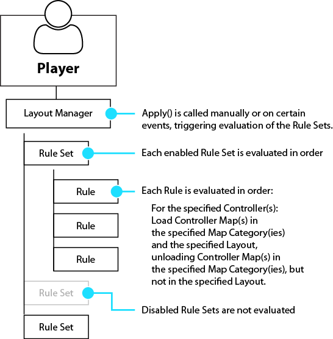

Layout Manager
Layout Manager can be used to manage loading and unloading of Controller Maps in a Player to force the specified Layouts to be used. This can be used to make specific Controller Maps be loaded in a Player with specific Layouts, for example when changing Controller Maps for a "Left-Handed" input scheme. These settings will persist and be inherited by new Controllers assigned to the Player based on your rules. This will enforce a single Layout per managed Map Category be loaded in the Player. Layout Manager cannot manage mutliple simultaneous Layouts in the same Map Category being loaded in the Player.
This does not manage enabled state of the Controller Maps. It only manages loading and unloading of Controller Maps. See Map Enabler to manage Controller Map enabled states. Normally, you would use both systems together.
How it Works:

- Each Player has its own Layout Manager that can be used to manage the Controller Maps for that Player.
- The Layout Manager contains a list of Rule Sets.
- Each Rule Set contains a list of Rules which determine what Controller Maps are to be loaded and/or unloaded.
- When Apply is called on the Layout Manager (manually or when certain things happen such as when assigning a Controller to a Player), all Rules in all enabled Rule Sets are processed one at a time in order. Controller Maps for the matching Controllers are unloaded or loaded as needed to comply with each Rule.
Tips:
- Rule Sets can be disabled so the Rules contained within are ignored when Apply is called.
- MapEnabler.Apply is called in the Player automatically every time Apply is called in the Layout Manager to make sure newly loaded Controller Maps are enabled or disabled as required.
- Only Controller Maps that are matched by one or more Rule in an enabled Rule Set will be managed. Any other Controller Maps in the Player will be unmanaged.
- One way of working with Rule Sets is to split up your Rules into many single-purpose Rule Sets, assign all the Rule Sets to your Player, starting them disabled, and selectively enable combinations of groups of Rule Sets to achieve different modes.
- Another way of working with Rule Sets is to stack many Rules into a Rule Set definining an entire mode in one Rule Set and just enable or swap out the Rule Set.
- If a Rule designates that maps for a Controller should be loaded in a specific Map Category and Layout but no Controller Map is found that matches those settings, a blank Controller Map with that Map Category and Layout will be created, resulting in no input through that Controller Map. For example, if you create a "Left-Handed" Layout for Joysticks in the "Default" Map Category, you should create a "Default", "Left-Handed" Controller Map for every Joystick you want to support (Controller Template Maps can be used to cover all the Controllers to which they apply.)
- Do not assign multple Controller Maps in the same Map Category but different Layouts to the Player if those Controller Maps are to be managed by Layout Manager. Layout Manager will keep only one Controller Map loaded per Controller, per Map Category if that Controller Map is managed.
- Layout Manager works in conjuction with Map Enabler. It's recommended you use both systems together to manage both Layouts and Controller Map enabled states.
- The Layout Manager must be enabled or it will not manage Layouts. The Layout Manager can be enabled and disabled from a script at runtime or on start from the Rewired Editor - Players page.
- The Load From User Data Store setting in the Layout Manager (set in the Rewired Editor or via scripting) determines whether loaded Controller Maps should first search the UserDataStore before loading from the Rewired Input Manager defaults. This allows saved user mappings created by Control Mapper or other custom control mapping systems to be loaded by Layout Manager when loading Controller Maps. Note that the UserDataStore implementation must implement the Rewired.Interfaces.IControllerMapStore interface in order for this to function.
- After changing Rule Sets or Rules in the Layout Manager, you should call LayoutManager.Apply to make these changes commit to the Player's Controller Maps.
- MapEnabler.Apply is called in the Player automatically every time Apply is called in the Layout Manager to make sure newly loaded Controller Maps are enabled or disabled as required. (The opposite is not true.)
Accessing from Scripts:
player.controllers.maps.layoutManager
Rule Sets:
Rule Sets can be created in the Rewired Editor or created at runtime via scripting.
Creating Rule Sets in the Rewired Editor:
Rule Sets can be created in the Rewired Editor on the Layout Manager Rules page. After creating the Rule Sets, you must assign them to Players on the Players page or they will not be used.
Alternately, Rule Sets created in the Rewired Editor can be loaded via scripting and added to the Player's Layout Manager as follows:
// Load an instance of the Rule Set var ruleSet = ReInput.mapping.GetControllerMapLayoutManagerRuleSetInstance(ruleSetId); // Add the Rule Set to the Player's Layout Manager player.controllers.maps.layoutManager.ruleSets.Add(ruleSet); // Apply the changes to the Player's Controller Maps player.controllers.maps.layoutManager.Apply();
Creating Rule Sets via Scripting:
Rule Sets can be created and assigned at runtime.
This example shows creating two Layout Manager Rule Sets that could be used to switch between the "Default" Layout and the "Leftie" Layout for Joysticks in the Map Categories "GameplayShared", "Airplane", and "Infantry." All other Controller Maps for other Controllers are unmanaged in this example and will not be affected by the Layout Manager.
private ControllerMapLayoutManager.RuleSet layoutManager_joysticks_default = new ControllerMapLayoutManager.RuleSet() {
// Enable the Rule Set. This is unnecessary since Rule Sets start enabled by default.
enabled = true,
// Create a tag if you want to find this Rule Set via scripting in the list
tag = "default",
// Create the list of Rules for this Rule Set
rules = {
// Load Default Layout for GameplayShared, Airplane, and Infantry categories in all Joysticks
new ControllerMapLayoutManager.Rule() {
// Create the Controller Set Selector to determine which Controller(s) this applies to
controllerSetSelector = ControllerSetSelector.SelectControllerType(ControllerType.Joystick),
// Set which Map Catetories of the Controller Maps to be loaded
categoryNames = new[] { "GameplayShared", "Airplane", "Infantry" },
// Set the Layout of the Controller Maps to be loaded
layoutName = "Default"
}
}
};
private ControllerMapLayoutManager.RuleSet layoutManager_joysticks_leftie = new ControllerMapLayoutManager.RuleSet() {
tag = "leftie",
rules = {
// Load Leftie Layout for GameplayShared, Airplane, and Infantry categories in all Joysticks
new ControllerMapLayoutManager.Rule() {
controllerSetSelector = ControllerSetSelector.SelectControllerType(ControllerType.Joystick),
categoryNames = new[] { "GameplayShared", "Airplane", "Infantry" },
layoutName = "Leftie"
}
}
};
Rules:
Rules are individual commands that are evaluated and applied to all matching Controller Maps in the Player to determine which Controller Maps should be loaded or removed. Each Rule in a Rule Set is evaluated in sequence.
Rules contain 3 pieces of information:
- Controller Selector - Determines which Controller(s) the Rule applies to. Only Controller Maps for the specific Controller(s) will be managed by this Rule.
- Categories - Determines which Map Categories are managed by this Rule.
- Layout - Determines the Layout of the Controller Map(s) to load / maintain.
When Layout Manager evaluates the Rules, for the specified Controller(s), it will unload any Controller Maps in Map Categories that match the specified Catgories in the Rule but do not match the specified Layout in the Rule. Then it will load Controller Maps in the specified Map Categories in the specified Layout.
Rules can be created in the Rewired Editor on the Layout Manager Rules page or created at runtime via scripting.